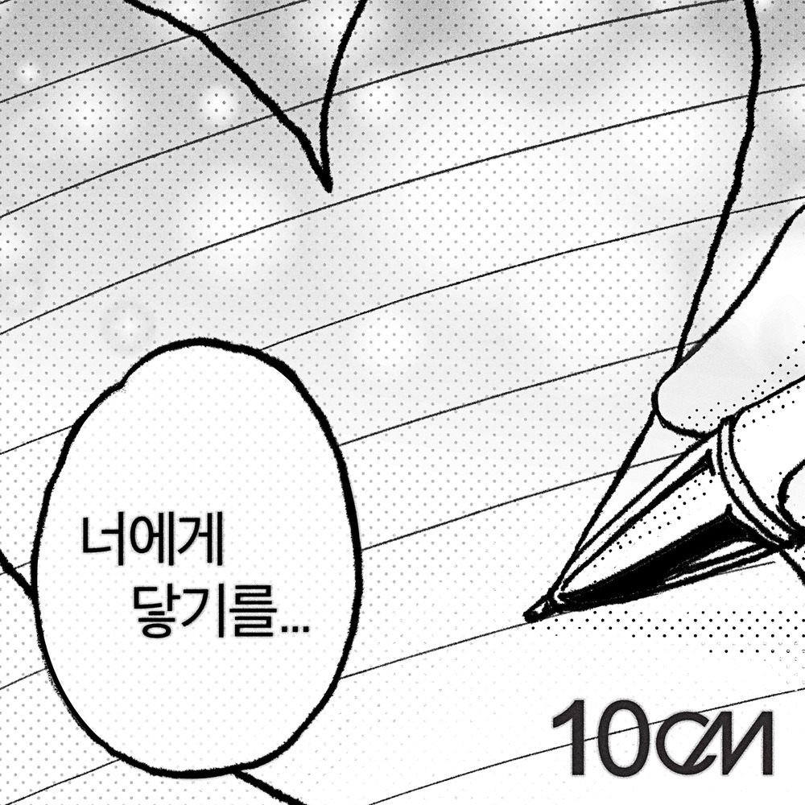

안녕하세요, 라보엠입니다.
오늘은 많은 이들의 추억 속에 남아 있는 애니메이션 ‘너에게 닿기를’의 오프닝 곡을 10cm만의 감성으로 재해석한 ‘너에게 닿기를’을 소개해드리려 합니다. 2010년 투니버스 방영 당시부터 사랑받아온 이 곡이, 15년 만에 정식 음원으로 발매되며 다시 한 번 우리 곁을 찾아왔습니다. 10cm 특유의 따뜻한 보이스와 맑은 멜로디가 어우러져, 봄날의 설렘과 순수한 감정을 고스란히 전해주는 곡입니다.

10cm 재해석 ‘너에게 닿기를’
10cm의 ‘너에게 닿기를’은 원곡의 순수하고 풋풋한 분위기를 유지하면서도, 권정열의 독특하고 따스한 음색이 더해져 한층 더 감미로운 느낌을 줍니다. 맑은 기타 선율과 담백한 편곡, 그리고 10cm 특유의 섬세한 감정선이 곡의 몰입도를 높입니다. 특히, 사랑하는 마음이 서툴고 조심스러운 이들의 감정을 담백하게 풀어내, 듣는 이로 하여금 첫사랑의 두근거림을 떠올리게 합니다.
이번 음원 발매와 함께 공개된 뮤직비디오는 라이브 클립 숏폼 영상이 자연스럽게 이어지며, 한 편의 감각적인 뮤직비디오를 완성합니다. 앨범 커버 역시 만화책에서 모티브를 가져와, 원작 팬들에게는 향수를, 새로운 리스너에게는 신선한 비주얼을 선사합니다. 10cm의 음악과 애니메이션의 감성이 절묘하게 어우러진 결과물이라 할 수 있습니다.
곡의 배경과 발매 비하인드
‘너에게 닿기를’은 원래 일본 애니메이션 ‘너에게 닿기를(君に届け)’ 시즌 1의 오프닝 곡으로, 오랜 시간 팬들에게 큰 사랑을 받아온 곡입니다. 10cm(십센치)는 이 곡을 라이브와 커버 무대로 선보여왔고, 팬들의 꾸준한 음원 요청 끝에 2025년 3월 6일 드디어 디지털 싱글로 정식 발매하게 되었습니다. 발매 소식과 동시에 각종 음원 차트 상위권에 오르며, 세대를 아우르는 감성을 다시 한 번 입증했습니다.
너에게 닿기를 노래 가사
따사로운 햇살 속에서
종소리가 울려 퍼지네
뺨을 매만지는 바람
한숨만은 깊어져만 가고
저 멀리서 핑 도는 눈물
이름을 붙여준 내일
포개어지는 미래 빛 라인
천진난만한 이런 기분도
신이 나서 날아갈 정도로 웃었던 날도
사랑스럽고 소중하게 키울 수 있도록
어렵고 힘들었던 시간을 넘어서
아주 많은 처음을 주었잖아
이어져 가서는 닿기를
천진난만한 이런 기분도
신이 나서 날아갈 정도로 웃었던 날도
사랑스럽고 소중하게 키울 수 있도록
어렵고 힘들었던 시간을 넘어서
아주 많은 처음을 주었잖아
이어져 가서는
천진난만한 이런 기분도
신이 나서 날아갈 정도로 웃었던 날도
사랑스럽고 소중하게 키울 수 있도록
어렵고 힘들었던 시간을 넘어서
아주 많은 처음을 주었잖아
이어져 가서는
이어져 가서는 닿기를
가사는 따스한 햇살과 바람, 그리고 소중한 사람을 향한 마음이 닿기를 바라는 소망을 담고 있습니다. “이어져 가서는 닿기를”이라는 반복되는 후렴구는, 멀리 있지만 마음만은 가까이 이어져 있기를 바라는 순수한 바람을 노래합니다. 힘들고 지친 시간을 넘어, 소중한 추억과 감정을 키워가며 성장하는 우리 모두의 이야기가 담겨 있죠.
10cm의 ‘너에게 닿기를’은 기존 팬들에게는 추억을, 새로운 팬들에게는 설렘을 선사하며 폭넓은 사랑을 받고 있습니다. 10cm만의 색깔로 재해석된 이 곡은, 원곡을 뛰어넘는 새로운 감동을 전해주며 “역시 10cm”라는 찬사를 받고 있죠. 또한, 다양한 뮤직 페스티벌과 공연에서 라이브로 만날 수 있어, 팬들과의 소통도 이어가고 있습니다.
주우재 커버 너에게 닿기를
모델 겸 방송인 주우재는 최근 10cm의 ‘너에게 닿기를’ 커버곡을 공개해 큰 화제를 모았습니다. 지난 4월 30일 유튜브 채널 ‘오늘의 주우재’에 올라온 이 영상에서 주우재는 밴드와 함께 직접 노래를 불렀으며, 화이트 셔츠와 블랙 넥타이, 와이드핏 데님 등 특유의 세련된 패션 감각도 눈길을 끌었습니다[2]. 특히 그의 미성과 담백한 보컬이 원곡과는 또 다른 매력을 선사해, 많은 이들이 “음색도 좋고 노래도 예쁘다”는 반응을 보였습니다.
이 커버 영상은 공개 직후 유튜브 인기 급상승 동영상 1위에 오르며, 단기간에 60만 뷰를 돌파하는 등 큰 인기를 얻었습니다. 동료 배우 변우석 역시 팬미팅에서 주우재의 커버를 언급해 훈훈함을 더했고, 여러 셀럽들과 뮤지션들이 잇따라 ‘너에게 닿기를’ 커버 릴레이에 동참하는 계기가 되기도 했습니다[2]. 주우재는 “결국 닿았어요”라는 짧은 소감으로 팬들에게 감사 인사를 전했습니다.
맺음말
10cm의 ‘너에게 닿기를’은 세대를 넘어 사랑받는 명곡으로, 우리 모두의 마음 한켠에 남아 있는 순수한 감정과 설렘을 다시 한 번 일깨워줍니다. 힘들고 지친 하루, 이 노래를 들으며 소중한 사람을 떠올려보는 건 어떨까요? 10cm의 따뜻한 목소리와 함께라면, 그 마음이 언젠가 꼭 닿을 것 같은 기분이 듭니다. 오늘은 ‘너에게 닿기를’ 노래로 마음속 작은 설렘을 채워보시길 바랍니다.